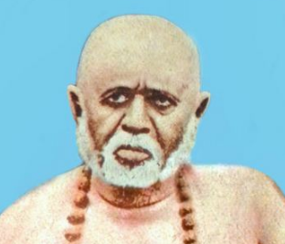

יאם ניאם על פי שרי טאילנג סוואמי
הועבר ע"י שרי שיוו שנקאר טריפאטי (שיבוג'י) לתלמידי הבריגהו יוגה בשנת 1996
תוספות ד"ר אודי בילו
מי שמיישם הנחיות אלו במחשבה בדיבור ומעשה עבורו השחרור מובטח
למעבר להנחיה נא ללחוץ על הכיתוב לחיצה כפולה